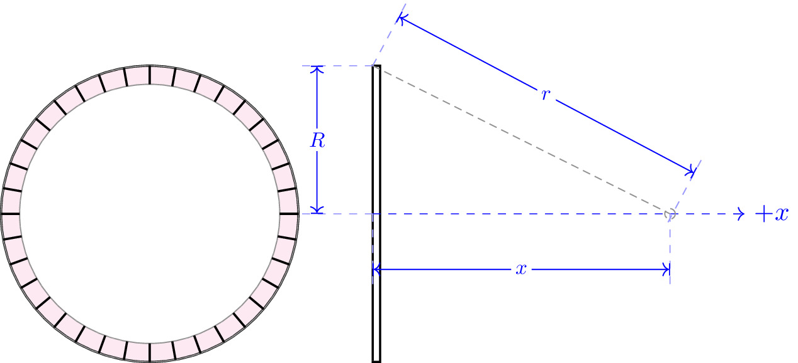

pre.tex
\documentclass[tikz]{standalone}\input{pre.tex}\begin{document}\begin{tikzpicture}
% \draw (0,0) node[left]{$\phi_0$} circle (1cm)
% circle (2cm);
% \draw[fill=black] (0,0) circle (2pt);
% \draw[axis,->] (0,0) -- (3,0) node[right] {$+r$};
% %
% \lineann[4]{90}{2}{$R_2$};
% \lineann[3]{90}{1}{$R_1$};
\fill[magenta!10] (0,0) circle (2);
\fill[white] (0,0) circle (1.75);
\draw[black,thick] (0,0) circle (2);
\foreach \i in {1.75,2}{
\draw[black!50] (0,0) circle (\i);
};
\foreach \angle in {0,10,...,360}{
\draw[black,thick] (0,0) ++ (\angle:1.75) -- ++ (\angle:0.25);
};
\draw[thick] (3,0) ++ (0,-2) rectangle ++(0.1,4);
\draw[dashed, blue,->] (3,0) -- (8,0) node[thick,right] {$+x$};
\draw[axis] (3,2) -- (7,0) circle (2pt);
\begin{scope}[xshift=3cm]
% \lineann[0.5]{90}{1.3}{$h$};
\lineann[1]{90}{2}{$R$};
\end{scope}
\begin{scope}[xshift=3cm, yshift=2cm]
\lineann[1]{-28}{4.5}{$r$};
\end{scope}
\begin{scope}[xshift=3cm, yshift=0cm]
\lineann[-1]{0}{4}{$x$};
\end{scope}
\end{tikzpicture}\end{document}